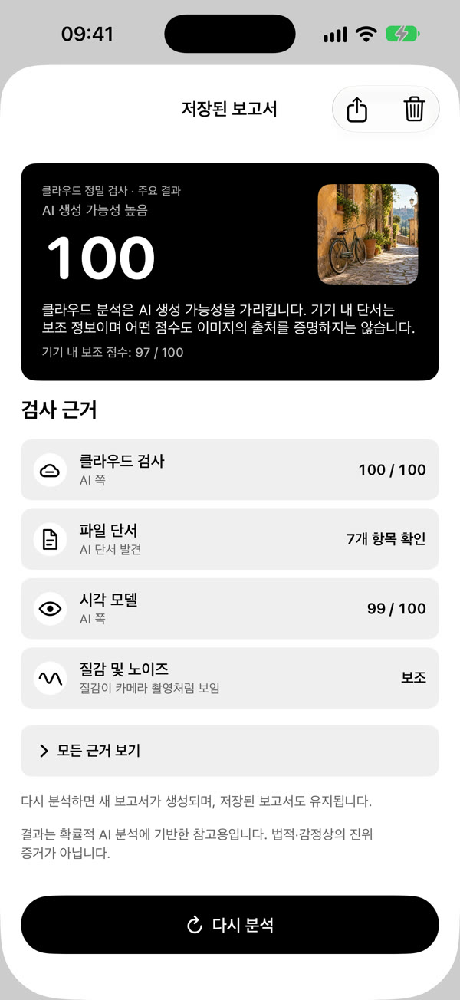
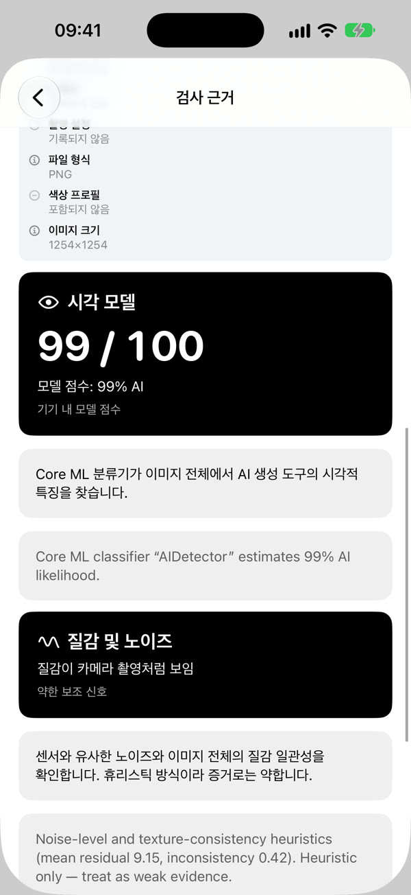
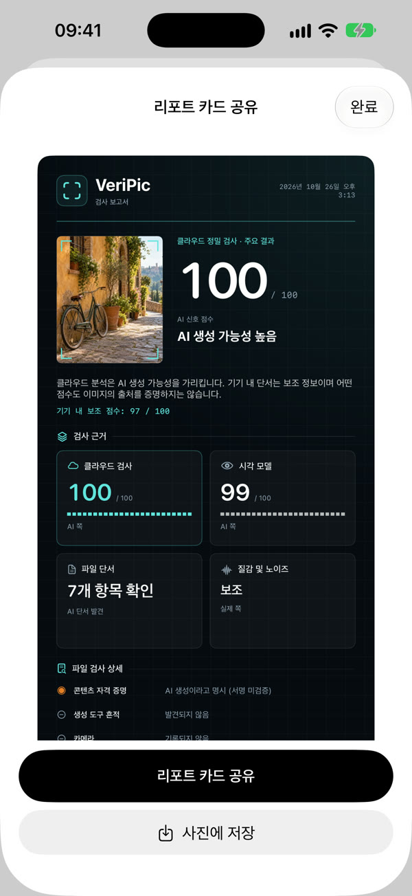

사진을 공유하기 전에
놀라운 사진을 발견했나요? 다른 사람에게 전하기 전에 AI 생성 단서를 확인하세요.
공유하거나 쇼핑하거나 사진을 믿기 전에, 이미지 속 단서를 살펴보세요. VeriPic은 클라우드 결과와 기기 내 신호를 읽기 쉬운 보고서로 보여 줍니다.
App Store 첫 출시 심사 중

다시 살펴볼 만한 일상의 세 가지 순간.
놀라운 사진을 발견했나요? 다른 사람에게 전하기 전에 AI 생성 단서를 확인하세요.
상품 사진이 너무 완벽해 보이나요? 이미지 신호를 판단에 참고하세요.
사진 한 장이 큰 주장을 뒷받침하나요? 이미지 단서를 살펴보고 다른 출처도 확인하세요.
클라우드 분석에 성공하면 그 결과를 먼저 표시합니다. 파일 정보, 시각 신호와 질감 지표는 보조 단서로 남습니다.


저장된 보고서 예시로 실제 사용 흐름을 보여 줍니다. 새로운 클라우드 분석을 실행하는 영상이 아닙니다. 클라우드 분석에 유료 크레딧이 필요할 수 있습니다.
기기 내 분석은 무료이며 가입이 필요 없습니다. 클라우드 업로드는 허락을 받습니다. 모델 개선을 위한 샘플 제공은 별도로 선택합니다.
클라우드 크레딧은 일회성 구매입니다. 구독이나 자동 갱신이 없습니다. 무료 분석은 서비스 한도와 제공 상황에 따라 달라집니다.
결과는 판단의 단서이며 진위의 증명이 아닙니다. 판매자, 신원, 뉴스의 신뢰성을 검증하지 않습니다. 압축이나 알려지지 않은 생성 모델이 결과에 영향을 줄 수 있습니다.